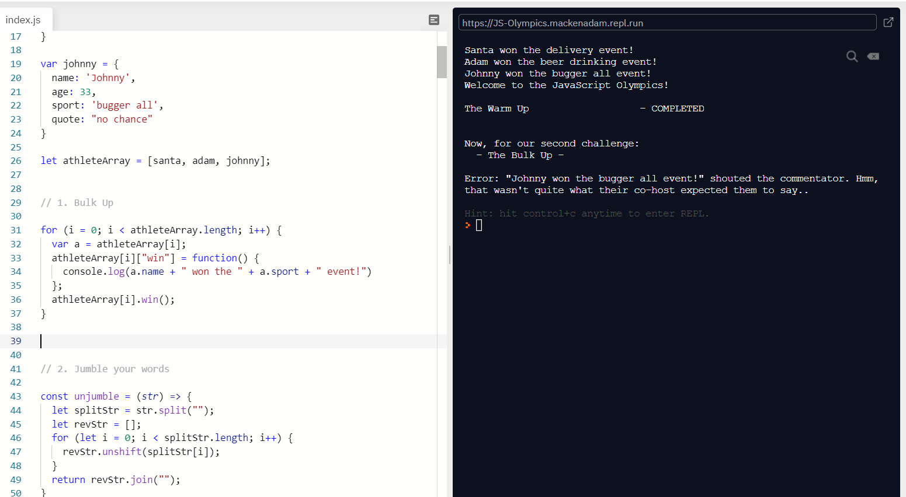
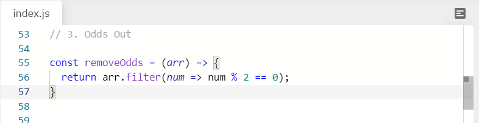
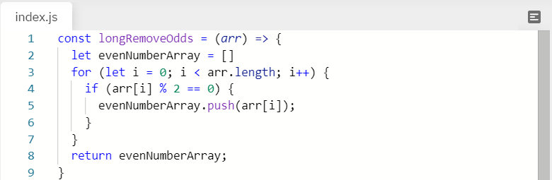

Adam Macken
Problem Solving
Sprint Four - Technical Blog Four
23 September 2020
Simple problems
Not every problem you run into when you are starting out will be glaringly obvious. Often times it is a simple misstroke on the keyboard that will cause your code to crash and you to bang your head against the wall in frustration for longer than you would like to admit. Spelling, punctuation, and syntax are of the utmost importance to a computer and when you mess one of these up your program can often come to a grinding halt.
A recent example of this for me was when I was working on JavaScript Olympics exercise. Take a look at the "Bulk up" section of code below and see if you can see what the problem is:
The test looks for each athlete to have an assigned method which can be called to 'log' the sentence "{athleteName} won the {athleteSport} event!" to the console. Looking at the code line by line; firstly we loop through each athlete that is in our athlete array and assign them to a variable 'a'. This is simply so that we can access and alter the properties of each athlete without having to write out 'athleteArray[i]' each time. Secondly, we assign each athlete a function called 'win', which will log to the console the message determined by our test. And finally, we call the function 'win' so that we return our sentence to the console, satisfying the conditions of our test. Except it doesn't...
Looking at the console we can see the message in the console is exactly what the test expected but it is still failing the test. By this point I have double, and triple, checked my spelling. I have made sure I haven't accidently added any punctuation. And I have read all of the documentation regarding for loops, dot/bracket notation, and object methods on W3School and MDN docs. Still the code doesn't work. I try finding similar examples on stack overflow and everything looks as though it should pass the test. But it doesn't. By this point I consider scrapping my code and trying again with the 'array.forEach' method. But I am stubborn, and I want to know why this code is failing even though it returns the expected result. So I swallow my pride and I reach out to my course coordinator for help.
It turns out I needed to use the ES6 'let' keyword rather than the 'var' keyword when declaring our 'a' variable. On the outside these two keywords look and act very similar and are often used interchangably. However, because of differences in scope using 'var' too freely can introduce unwanted bugs and many people suggest ditching 'var' completely. In the end, struggling with such a simple problem also led to me having a deeper understanding of how and why our code works. If you want to learn from my mistakes then jump on over to dev.to and read about the differences between the two and why you should be ditching 'var'.
Simple solutions
Other times things just seem to fall into place. There is an art in solving a problem in a way that is simple, concise, and easy for others to understand and this seems to come as you have more exposure to different methods of achieving the same result. Take the following code for instance:
The goal of this function is to loop through an array of numbers, identify all of the even numbers, and return them as a new array. Previous to exploring JavaScript's built in array functions I probably would've solved this problem by initialising a new even number array, creating a 'for' loop that ran through our initial array, running some math in an 'if' loop that evalutes whether the current number is an even number, if it is push it to our even number array, and finally return our result. What a mouthful! Even though the code does exactly what we want it to do it's not simple, it's much longer, and it's harder to figure out what it is the function is trying to achieve:
Instead in our first example we use the built in '.filter()' method to filter through an array and return an array of items that meet the given conditions. In this case our condition is that if the number is divisible by two with no remainder. Simple. Concise. Easy to understand.
Simple steps
Coming at a problem head-on is not always the best way to solve it. When you run into something that you aren't familiar with it can help to have a series of steps to follow so that you don't spend an entire day reading documentation on MDN docs for something that turns out to be a simple fix (R.I.P Tuesday 22 September...). This process will be different for everyone but i'll run through mine below. Feel free to add steps in. Or take steps out. Or to do the hokey pokey and to turn about; if that helps.
- Pseudocode - It helps going into a problem knowing what you want to achieve. Write down the steps you think it'll take to get there. You may need to change or add to your psuedocode as you go. That's ok. Its main purpose is to give you some sort of direction.
- Have a go - You may be surprised what comes out if you just start typing. Take each step from your psuedocode and try and write some code that will deal with that. Run a console.log() at each step to make sure it is doing what you think it is. Do what you are comfortable with first. Declare a variable. Run a for loop. Each of these steps is one closer to your end goal. If you get stuck on something that's ok, we'll tackle that with research.
- Research - Ask Dr. Google. Seriously. Anything that you don't understand, don't know how to do, or isn't working properly can be fixed with a quick Google search nine times out of ten. The Internet gives us access to an endless amount of information on almost any subject you can possibly think of. And heaps of funny cat pictures. It's up to you what you use it for.
- Talk it out - Sometimes you just need a second opinion. Having someone look at your project with a fresh pair of eyes can often help set you in the right direction. Your peers or your course coordinator may have another solution or may have come across a similar problem before. Don't be afraid to reach out to them. Everyone has either been in a similar position at some point in time, or they're a liar.
- Take a break - Take five minutes to get up from your desk, take a brisk walk, and drink some water. Just giving your brain a few moments away from the screen is especially helpful when you start to tunnel-vision on a problem and find yourself doing the same thing over and over expecting a different result.
- Repeat - Sometimes the only way to solve a problem is through perserverance. Keep repeating these steps until you are speaking directly to Brendan Eich if you have to and eventually you will find a solution.
You won't need to follow all of these steps all of the time. Sometimes a problem will just click after five minutes of staring blankly at it. The important thing is to find steps that work for you and that you can implement when you run into a particularly challenging problem. Have a robust method ready to deal with them and I promise you that these problems wont seems nearly as intimidating.